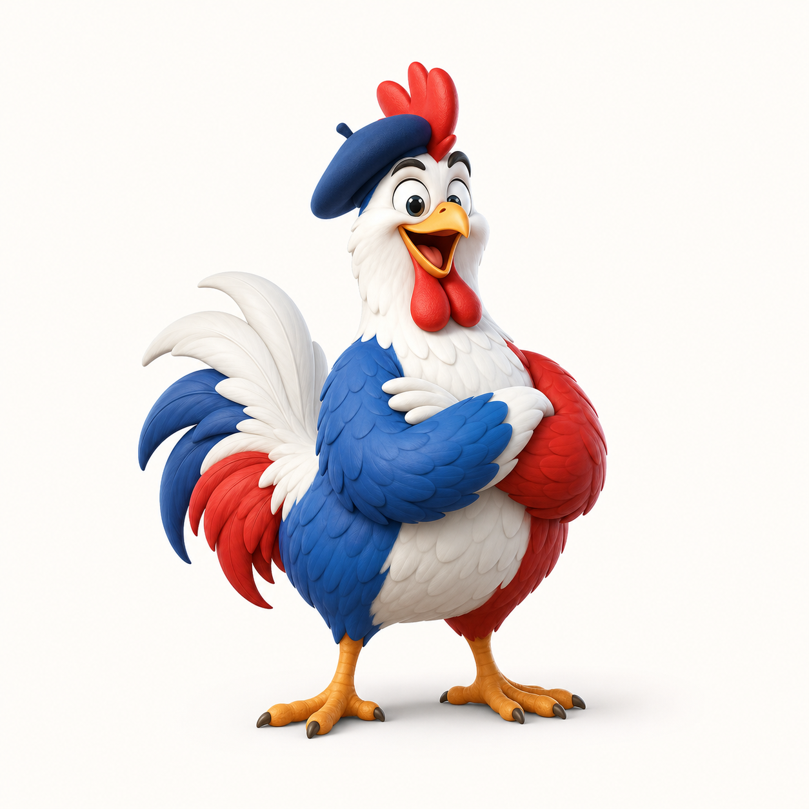

French Tech, but make it poultry
Unicorn? Non. Poule.
`git pull` with a chicken sound, a victory strut, and a KO poulet when Git says non.
startup-poulailler.local
$ git poule --rebase
From github.com:alexandre/git-poule
Already up to date.
\\
\\ cot cot
\\
__
<(o )___
( ._> /
`---'Le pitch en 7 secondes
Un wrapper minuscule. Une ambition nationale.
Git fait le pull. La poule fait le panache. Les arguments sont forwardes, le code retour est preserve, et personne ne touche a ta config Git.
./install.sh
git poule --ff-only origin mainMode catastrophe controlee
Quand le pull rate, la poule tombe.
Pas de bruit de victoire sur echec. `git-poule` garde le code non-zero de Git et affiche un KO lisible pour ton terminal.
$ git poule --ff-only
fatal: Not possible to fast-forward, aborting.
pull rate
__
<(x )___
( ._> /
`---' KO